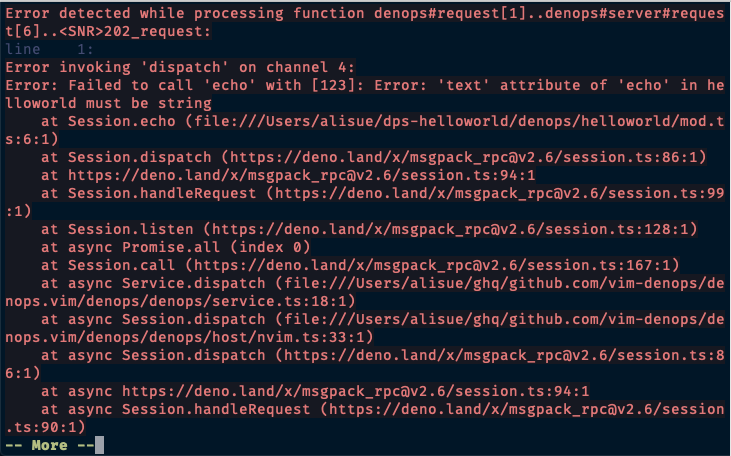

Denops

Denops is an ecosystem of Vim/Neovim which allows developers to write plugins in Deno. It has the following features:
- Same code can be used in both Vim and Neovim
- Can be installed as a Vim plugin
- Deno uses V8 engine which is much faster than Vim script
- User don't need to manage library dependencies
- Denops runs as a separate process, so Vim won't freeze
- Each plugin work on its own thread, so that there is less chance of interference
Requirements
Denops require the followings
Make sure deno command is executable from your Vim/Neovim by:
:echo exepath('deno')
It would show an executable path of deno command. If nothing is shown, make
sure the $PATH is correct in your Vim/Neovim.
Use g:denops#deno if you'd like to specify deno executable manually like:
let g:denops#deno = '/opt/deno/bin/deno'
Install
Denops must be installed in a runtimepath, like a general Vim plugin. Install
it with your favorite Vim plugin managers like:
By vim-plug
Add vim-denops/denops.vim like:
Plug 'vim-denops/denops.vim'
Then execute :PlugInstall to install.
By minpac
Add vim-denops/denops.vim like:
call minpac#add('vim-denops/denops.vim')
Then execute :call minpac#update() to install.
By dein.vim
Add vim-denops/denops.vim like:
call dein#add('vim-denops/denops.vim')
Then execute :call dein#install() to install.
Check health
Denops support :checkheath (Neovim) or :CheckHealth (Vim with
vim-healthcheck) to check denops health like:
health#denops#check
========================================================================
- INFO: Supported Deno version: `1.11.0`
- INFO: Detected Deno version: `1.11.5`
- OK: Deno version check: passed
- INFO: Supported Neovim version: `0.4.4`
- INFO: Detected Neovim version: `0.5.0`
- OK: Neovim version check: passed
- INFO: Denops status: `running`
- OK: Denops status check: passed
Execute those commands to investigate why denops does not work.
Tutorial
This article is a tutorial on developing Denops plugins.
Environment
In this tutorial, we use the following software and version as of writing.
- denops.vim v1.0.0 (2021-07-19)
- denops_std v1.0.0 (2021-07-19)
Glossary
| Term | Meaning |
|---|---|
| vim | Vim or Neovim. |
| vim plugin | Vim plugin or Neovim plugin. |
| Deno | A JavaScript and TypeScript runtime. |
| Denops | An ecosystem for vim plugins based on Deno runtime. |
| Denops plugin | A vim plugin that works on both Vim and Neovim and is written with Denops. |
| denops.vim | The name of the vim plugin to introduce Denops into vim. |
Preparing Deno and Denops
First of all, whichever you want to either use or develop Denops plugins, you have to install tools; Deno and Denops in addition to your vim.
Installing Deno
Deno can be installed to follow the instructions in the Deno document. In addition, you can check if Deno has been installed successfully by the command:
deno run https://deno.land/std/examples/welcome.ts
If you have already installed Deno, upgrade it to the latest version.
deno upgrade
Installing Denops
It is necessary for using Denops to install as a vim plugin
denops.vim. For example, when you use vim-plug as a
vim plugin manager, add the following command to your .vimrc and execute
:PlugInstall on vim to install Denops.
Plug 'vim-denops/denops.vim'
If you prefer another vim plugin manager, you can find instructions for it on the Install page.
Thus Deno and Denops are available in your environment.
Developing Your First Plugin
Now you are ready to write a Denops plugin. It would be better to start by
developing a small plugin. So we will name the plugin helloworld and place it
under ~/dps-helloworld.
- Vim/Neovim Configuration
- Making a Plugin Directory Tree
- Adding a Skelton of Denops Plugin
- Adding an API
- Calling Vim/Neovim Features
- Developing More Applicative Plugin
Vim/Neovim Configuration
Vim plugins have to be located under a path in runtimepath on your vim
configuration. Denops plugins also have to be placed in runtimepath because
they are also vim plugins. To add the plugin path to your .vimrc, you write:
set runtimepath^=~/dps-helloworld
The other setting to add to your .vimrc is to make Denops launch in debug mode
to enable type checkings at startup of Deno:
let g:denops#debug = 1
Note that running Denops in debug mode has a performance problem. Once your development goes well, it would be better for you to disable the debug mode.
Making a Plugin Directory Tree
Next, you have to make a directory ~/dps-helloworld to store plugin codes and
change the current working directory to it. If you use Windows, you should find
and use equivalent commands.
mkdir ~/dps-helloworld
cd ~/dps-helloworld
Then make a minimum directory tree and a code file required by Denops at least:
mkdir -p denops/helloworld
touch denops/helloworld/main.ts
Finally, you will get a directory tree like:
dps-helloworld
└── denops
└── helloworld
└── main.ts
This directory tree is a basis for developing a Denops plugin; Denops loads
denops/*/main.ts on runtimepath automatically after your vim starts up.
Adding a Skelton of Denops Plugin
Once a Denops plugin is loaded, Denops calls the main function exported from
main.ts of the plugin code. So initially you can write main.ts like:
import { Denops } from "https://deno.land/x/denops_std@v1.0.0/mod.ts";
export async function main(denops: Denops): Promise<void> {
// Plugin program starts from here
console.log("Hello Denops!");
};
An argument denops is passed to the main function, where denops is an
instance of Denops class exported from denops-std.
Then you restart vim, and you can see a message [denops] Hello Denops! on the
vim window.

If you are too lazy to restart vim, you can simply run
:call denops#server#restart() on vim to reload Denops only.
Adding an API
Each Denops plugin registers one or more functions as APIs to Denops. First, try
to write an echo() function that returns a given string and register it as an
API. You can rewrite main.ts as follows:
import { Denops } from "https://deno.land/x/denops_std@v1.0.0/mod.ts";
import { ensureString } from "https://deno.land/x/unknownutil@v0.1.1/mod.ts";
export async function main(denops: Denops): Promise<void> {
denops.dispatcher = {
async echo(text: unknown): Promise<unknown> {
// assure `text` is string type.
ensureString(text);
return await Promise.resolve(text);
},
};
};
Note that you can register a function that satisfies the following as an API:
- All of its arguments must be of type
unknown. - The type of its return value must be either
Promise<unknown>orPromise<void>.
Thus an echo API is registered to the helloworld plugin. To call an API, you
can use a vim command of the form denops#request({plugin}, {func}, {args}). So
you can use the echo API to execute the command below after restarting vim:
:echo denops#request('helloworld', 'echo', ["Hello Denops!"])
If it goes well, you will see Hello Denops!.

If a non-string argument is passed to the echo API, such as
denops#request('helloworld', 'echo', [123]), Denops will raise an error:

Calling Vim/Neovim Features
If you want to use a vim feature from your Denops plugin, you can call it via
the denops instance passed to the plugin's main function. You can rewrite
main.ts like below to register the echo API as a vim command:
import { Denops } from "https://deno.land/x/denops_std@v1.0.0/mod.ts";
import { execute } from "https://deno.land/x/denops_std@v1.0.0/helper/mod.ts";
import { ensureString } from "https://deno.land/x/unknownutil@v0.1.1/mod.ts";
export async function main(denops: Denops): Promise<void> {
denops.dispatcher = {
async echo(text: unknown): Promise<unknown> {
ensureString(text);
return await Promise.resolve(text);
},
};
await execute(
denops,
`command! -nargs=1 HelloWorldEcho echomsg denops#request('${denops.name}', 'echo', [<q-args>])`,
);
};
The helper function execute() receives a multiline string and executes it as a
Vim script, where denops.name represents the name of the running plugin
itself. Once vim is restarted, the HelloWorldEcho command will be registered.
Then you can run:
:HelloWorldEcho Hello Vim!
If the plugin has been registered successfully, you will see Hello Vim! as a
result.

If you want to learn more details on denops API, you can refer to
denops-std API document.
Developing More Applicative Plugin
Now you have learned the basics of developing Denpos plugins in the previous sections. Then it would be best if you tried to create a more functional plugin.
So let me ask you, out of the blue, have you ever itched to solve mazes while programming? I never have. In any case, there may be people who love solving mazes and can't get enough of it. So let's try to develop a Denops plugin that can generate and display a maze in vim at any time.
Of course, it would be nice to start by coding a maze generation algorithm.
However, you are now with Deno so that you can use a third-party library
maze_generator for your
convenience. First, you should define a Maze command similarly to
HelloWorldEcho; Maze generates a maze and outputs it with console.log().
import { Denops } from "https://deno.land/x/denops_std@v1.0.0/mod.ts";
import { Maze } from "https://deno.land/x/maze_generator@v0.4.0/mod.js";
export async function main(denops: Denops): Promise<void> {
denops.dispatcher = {
async maze(): Promise<void> {
const maze = new Maze({}).generate();
const content = maze.getString();
console.log(content);
},
};
await denops.cmd(`command! Maze call denops#request('${denops.name}', 'maze', [])`);
};
Restarting vim, and you will see a maze by commands:
:Maze
:mes

Well done! But it is a little boring... So let's try to modify the code to make a generated maze output to a buffer.
import { Denops } from "https://deno.land/x/denops_std@v1.0.0/mod.ts";
import { Maze } from "https://deno.land/x/maze_generator@v0.4.0/mod.js";
export async function main(denops: Denops): Promise<void> {
denops.dispatcher = {
async maze(): Promise<void> {
const maze = new Maze({}).generate();
const content = maze.getString();
await denops.cmd("enew");
await denops.call("setline", 1, content.split(/\n/));
},
};
await denops.cmd(`command! Maze call denops#request('${denops.name}', 'maze', [])`);
};
In this code, denops.cmd() executes the vim command enew to open a new
buffer in the current window and then denops.call() calls the vim function
setline() to write the maze to the buffer. Restart vim, rerun the commands,
and then you can see:

Awesome! Even if it looks like enough, you can improve your code a bit more.
Here is an example of a modification so that the Maze command can receive a
vim command other than enew, make a produced maze fit the current display
area, etc.:
import { Denops } from "https://deno.land/x/denops_std@v1.0.0/mod.ts";
import { execute } from "https://deno.land/x/denops_std@v1.0.0/helper/mod.ts";
import { Maze } from "https://deno.land/x/maze_generator@v0.4.0/mod.js";
import { ensureString } from "https://deno.land/x/unknownutil@v0.1.1/mod.ts";
export async function main(denops: Denops): Promise<void> {
denops.dispatcher = {
async maze(opener: unknown): Promise<void> {
ensureString(opener);
const [xSize, ySize] = (await denops.eval("[&columns, &lines]")) as [
number,
number
];
const maze = new Maze({
xSize: xSize / 3,
ySize: ySize / 3,
}).generate();
const content = maze.getString();
await denops.cmd(opener || "new");
await denops.call("setline", 1, content.split(/\r?\n/g));
await execute(denops, `
setlocal bufhidden=wipe buftype=nofile
setlocal nobackup noswapfile
setlocal nomodified nomodifiable
`);
},
};
await denops.cmd(`command! -nargs=? -bar Maze call denops#request('${denops.name}', 'maze', [<q-args>])`);
};
Now you can see a smaller maze shown on the window.

Developing Your Next Plugins
How do you feel about Denops plugin development? I think you could understand that you can create Vim/Neovim plugins with Denops so easily. Denops is a fantastic portable ecosystem for Vim/Neovim plugins, though it is going under development. If you are interested in creating Denops plugins, this tutorial and the following documents will help you.
We are looking forward to your feedback and contributions to our development. 🙇